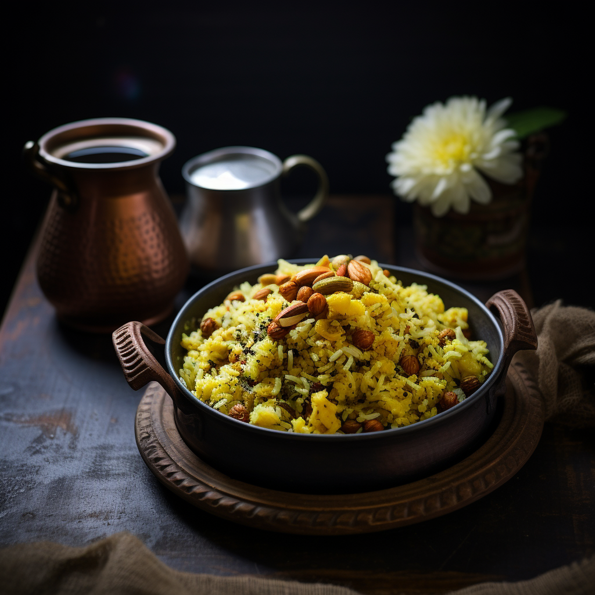

Poha

Ingrediants:
- 1 cup flattened rice (poha)
- 1 onion, finely chopped
- 1 potato, boiled and diced
- 1/4 cup peanuts
- 1/2 teaspoon mustard seeds
- 1/2 teaspoon turmeric powder
- 1/2 teaspoon cumin seeds
- 2-3 green chilies, chopped
- Few curry leaves
- Salt to taste
- Oil for cooking
- Fresh coriander leaves for garnishing
- Lemon wedges for serving
Recipe:
- Rinse the flattened rice (poha) under cold water, drain well, and set aside.
- Heat oil in a pan, add mustard seeds and let them splutter.
- Add cumin seeds, chopped green chilies, and curry leaves. Sauté for a minute.
- Add chopped onions and sauté until they turn translucent.
- Add diced boiled potatoes and peanuts. Cook for a few minutes.
- Add turmeric powder and salt. Mix well.
- Add the rinsed poha to the pan and gently mix everything together.
- Cook for a few minutes until the poha is heated through.
- Garnish with fresh coriander leaves and serve hot with lemon wedges.